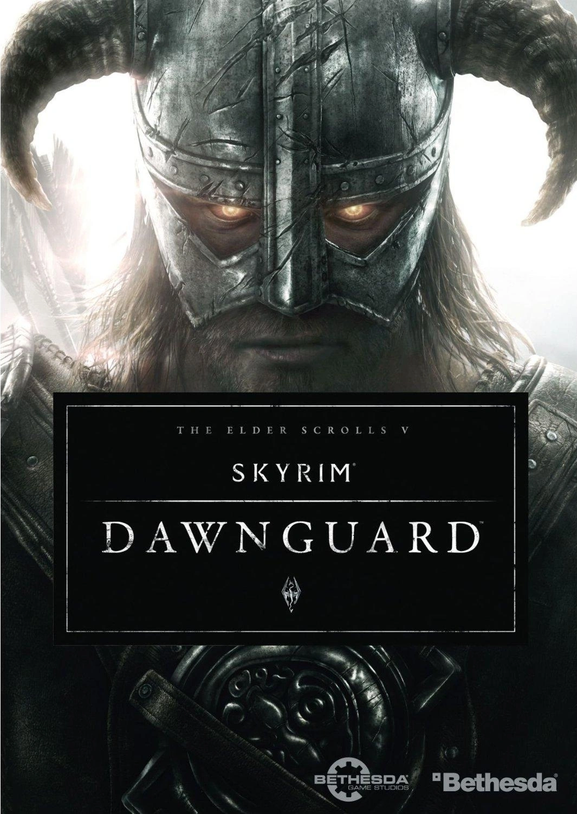
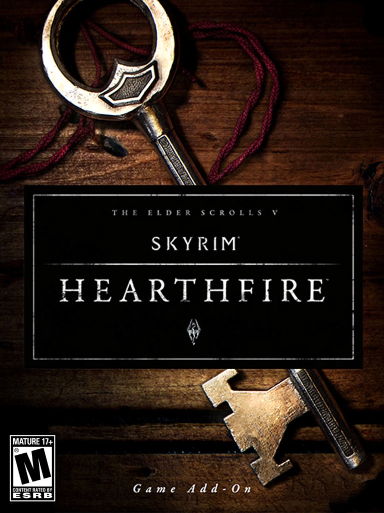

Dawnguard
Em 1 de maio de 2012, Bethesda anunciou que o primeiro conteúdo para download (DLC) de Skyrim, chamado Dawnguard, foi lançado para Xbox 360 no verão de 2012 e em Fevereiro de 2013 para Playstation 3 por conta de problemas. Dia 4 de outubro foi disponibilizado para PC pelo Steam. Essa DLC adiciona diversas facções, magias, lugares, seguidores, itens e criaturas. O enredo foca na história do clan Volkihar, um grupo dos mais poderosos vampiros de toda a província sobre a ordem de Lorde Harkon , e os Dawnguards: a nova reformada ordem de caçadores de vampiros sobre a ordem de Isran. Nessa DLC é possível escolher o lado que seu Dragonborn vai se aliar.
Heartfire
Hearthfire foi a segunda DLC paga de Skyrim, disponibilizada para Xbox 360 e Playstation 3 em 4 de setembro de 2012, e para PC dia 5 outubro de 2012, disponibilizada através da Steam. Introduziu ao jogo a compra de terrenos, a construção de casas, com apenas um quarto ou com salas de troféus, arsenais, estufas e muito mais, além de permitir a contratação de mordomos, cocheiros e bardos. Tornou possível, também, adotar crianças e trazer cônjuges para morarem juntos.
DragonBorn

Última DLC de The Elder Scrolls V: Skyrim. Esse novo Add-On foi disponibilizado para os jogadores de Xbox 360 em 4 de dezembro de 2012, Windows dia 5 de fevereiro de 2013 e Playstation 3 dia 12 de fevereiro de 2013. A expansão torna a ilha de Solstheim acessível, possibilita a montaria Dracônica (montar em dragões), novos Shouts, magias, poderes, armas, mais missões, um novo tipo de dragão, armaduras, joias novas, roupas e muitas horas de jogo adicionais. Enredo: Viajar para a ilha de Solstheim e encontrar Miraak, um antigo Sacerdote do Dragão misterioso que uma vez já foi governante da ilha. Ao contrário dos Sacerdotes do Dragão de Skyrim, este indivíduo é supostamente um "Dragonborn" muito parecido com o Dovahkiin jogável, e possui a capacidade de absorver as almas dos Dragões. Hermaeus Mora, o Príncipe Daédrico do Conhecimento, possuí grande envolvimento durante o desenrolar da história. Esta DLC é considerada por muitos jogadores a melhor DLC já feito para Skyrim.